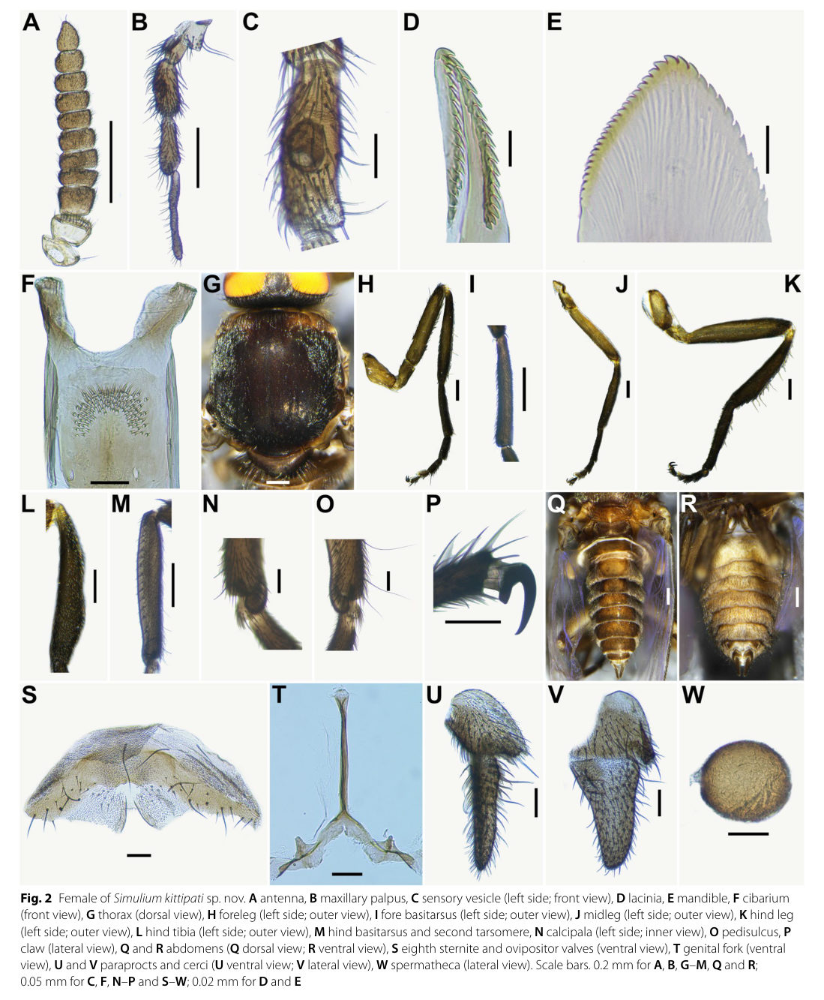
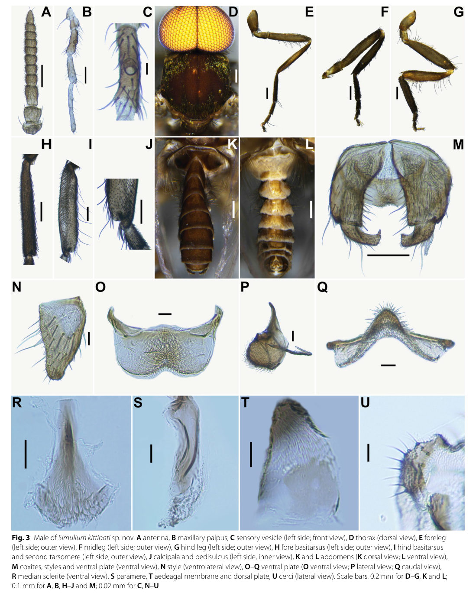
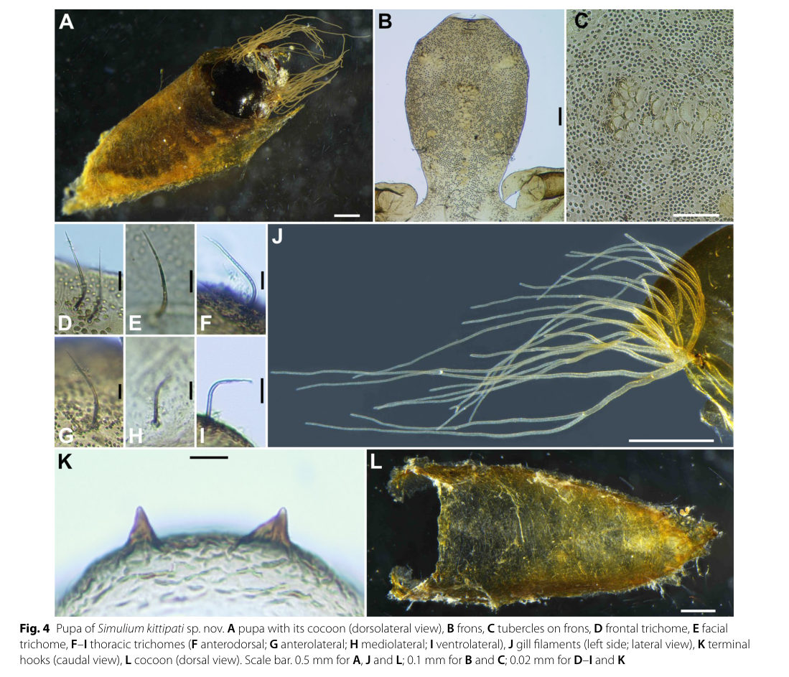
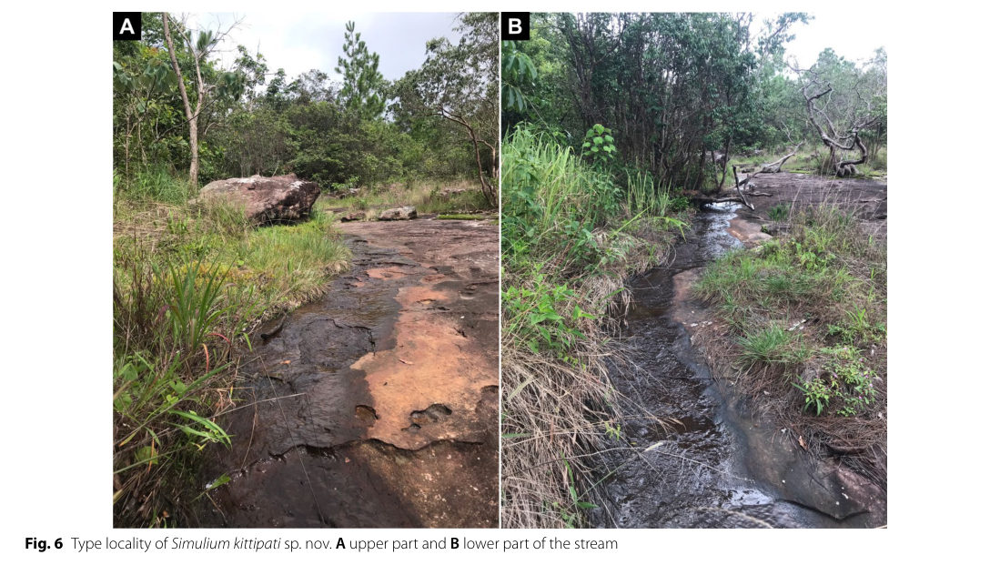

Species › Simulium › Asiosimulium
Simulium kittipati
| Classification | Genus Simulium, subgenus Asiosimulium |
|---|---|
| Status | valid |
| Distribution | Thailand (Phitsanulok) (Srisuka et al. 2024) |
| Thailand | Type locality: Nakhon Thai District, Phitsanulok Province, central Thailand, 1,123 m, 17°00'27.6"N 100°59'21.0"E, seasonal stream, 15-VII-2023 (Srisuka et al. 2024, pp. 4, 12) |
| Diagnostic notes | Subgenus Asiosimulium (9th known species; COI Clade I, sister to S. phurueaense with 1.74% minimum K2P divergence). Female: sensory vesicle 0.25-0.35x 3rd palp segment, scutum with 3 faint longitudinal vittae, abdominal segment 5 shiny dorsally, cercus 1.6x basal width (vs 2.0x in S. phurueaense), spermatheca ellipsoidal (vs globular in S. phurueaense, S. wanchaii, S. khongchiamense). Male: upper-eye (large) facets in 20 vertical columns and 21 horizontal rows (vs 17-18 columns in S. khongchiamense and 14 x 15 in S. shanense), hind basitarsus slender (0.71-0.76x hind tibia, ~0.80x in key), ventral plate posterior margin moderately concave medially, median sclerite broadened, rounded with several sutures and upturned apically (vs no sutures and not upturned in S. phurueaense). Pupa: head and thorax densely covered with tiny round tubercles (vs moderately in S. phurueaense, sparsely in S. khongchiamense), arborescent gill with 28-30 filaments (vs 30-33 in S. phurueaense/S. oblongum/S. khongchiamense, 42-56 in S. saeungae, 22 in S. furvum, 19 in S. wanchaii) and normal basal fenestra (vs bulbous in S. suchitrae). Larva: body 7.6-8.1 mm, postgenal cleft deep (8.8x postgenal bridge) with dark-pigmented sheath of subesophageal ganglion, labral fan 41-42 main rays, gill histoblast 28-30 filaments, posterior circlet 71-73 rows with 11-12 hooklets/row (vs 80 rows and 15 hooklets in S. phurueaense) (Srisuka et al. 2024, pp. 5-16). |
| Sources | Srisuka et al. 2024 |
How it keys out
The chain of characters leading to this taxon in each key (a ready-made diagnosis).
Subgenus Asiosimulium: adult females (Srisuka et al. 2024) – couplet 4a
Subgenus Asiosimulium: adult males (Srisuka et al. 2024) – couplet 4a
Subgenus Asiosimulium: pupae (Srisuka et al. 2024) – couplet 4a
Subgenus Asiosimulium: mature larvae (Srisuka et al. 2024) – couplet 4a
Figures









